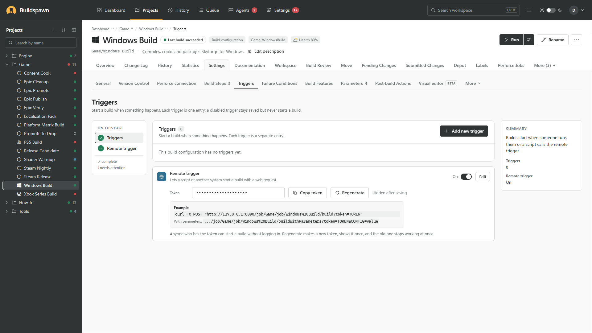

Remote trigger
Lets a script or another system start a build with a web request and a token.
When to use it
Use it when something outside Buildspawn must start a build: a store webhook, a nightly script of another team, a chat command. It is off by default.
How to set it up
- Open the build configuration and go to Settings › Triggers.
- Turn on the Remote trigger switch at the bottom.
- Copy the Token. It is shown once and hidden after you save.
- Use the example
curlline.

Every field
| Field | What it does | Default | Example |
|---|---|---|---|
| Remote trigger (switch) | On or off. Shown when security is on or the build configuration already has a token. | Off | On |
| Token | The secret in the request. Copy and Regenerate buttons. Regenerate makes a new token, shows it once, and the old one stops working at once. | Generated | (hidden) |
| Use my own token | Type a token of 8 to 200 letters, digits or . _ ~ - and click Save token. | Empty | skyforge-nightly-2026 |
A worked example
A store webhook starts the Release build:
curl -X POST "http://buildspawn/job/Game/job/Release/build?token=TOKEN"
curl -X POST "http://buildspawn/job/Game/job/Release/buildWithParameters?token=TOKEN&CONFIG=Shipping"What you see when it runs
The call answers with a status and the build is queued. The build's cause says it was started by a remote request. A value that someone typed with a token is not written into scripts (see Parameter references).
Problems and fixes
| Problem | What to do |
|---|---|
| The switch is missing | Security is off and the build configuration has no token. |
| A 403 answer | The token is wrong or was regenerated. |
| The token is refused when I set my own | It must be 8 to 200 letters, digits or the characters . _ ~ - |